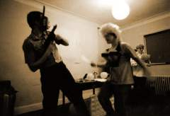

In a change from previous years, CAPTION will be held in Wolfson College, Oxford, a large graduate college in North Oxford, beside the River Cherwell. ☛more

Apart from the various restaurants in North Oxford, CAPTION can offer its own pizza orgy. Sign up for a pizza flavour at the registration desk, and then after the auction a carload of pizza boxes will appear as is by magic.
The National Theatre of Earth-Prime has been harrowing the sensibilities of comics fans for over a hundred and fifty years now, at least that was the case before history was rewritten to put their origin in the late 1990s.
Local art cinema the Phoenix Picture House is showing Harvey Pekar’s American Splendor at 11.00 on Saturday 15 August. CAPTION members get discounted tickets at £3·50. The Phoenix is on Walton Street in Oxford’s Jericho district, a 15-minute walk from Wolfson College.